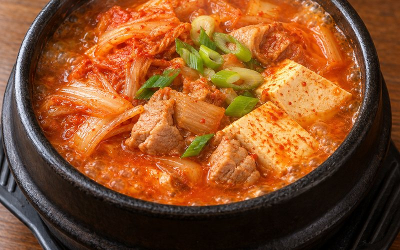
スープ・鍋
キムチチゲ
よく発酵したキムチと豚肉、またはツナを煮込む韓国の定番家庭料理です。
4人でのおすすめ 豚肉入りキムチチゲを2人前頼み、卵焼きまたはラーメンの替え玉を追加。
FOOD CANDIDATES
それぞれの特徴、味、食べる時間、4人で注文する際のコツをまとめました。写真はイメージをつかむための生成画像です。

スープ・鍋
よく発酵したキムチと豚肉、またはツナを煮込む韓国の定番家庭料理です。
4人でのおすすめ 豚肉入りキムチチゲを2人前頼み、卵焼きまたはラーメンの替え玉を追加。
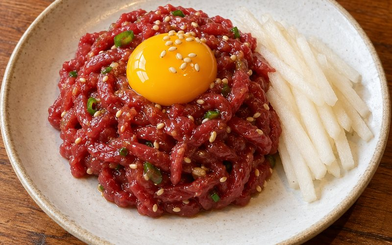
生肉・ホルモン
生の牛肉をごま油、梨、卵黄と和えて食べる料理です。
4人でのおすすめ 一皿を4人で少しずつ味見。
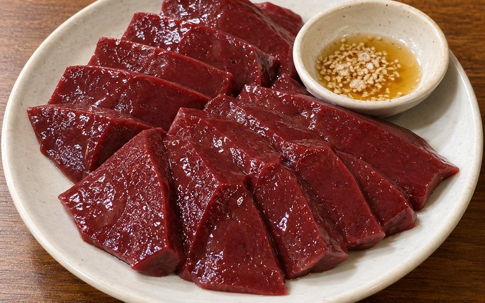
生肉・ホルモン
新鮮な牛レバーをごま油と塩につけて食べる、かなり挑戦的なメニューです。
4人でのおすすめ 信頼できる専門店で少量だけ試す。
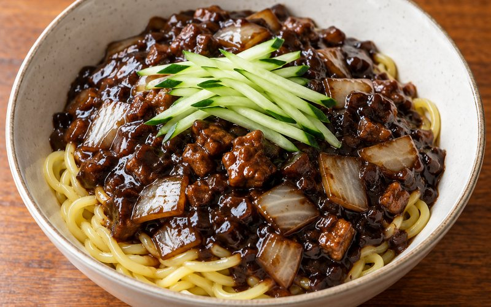
韓国式中華
黒味噌のチュンジャン、豚肉、玉ねぎで作る韓国式の中華麺です。
4人でのおすすめ チャジャンミョン2杯、チャンポン1杯、タンスユクをシェア。
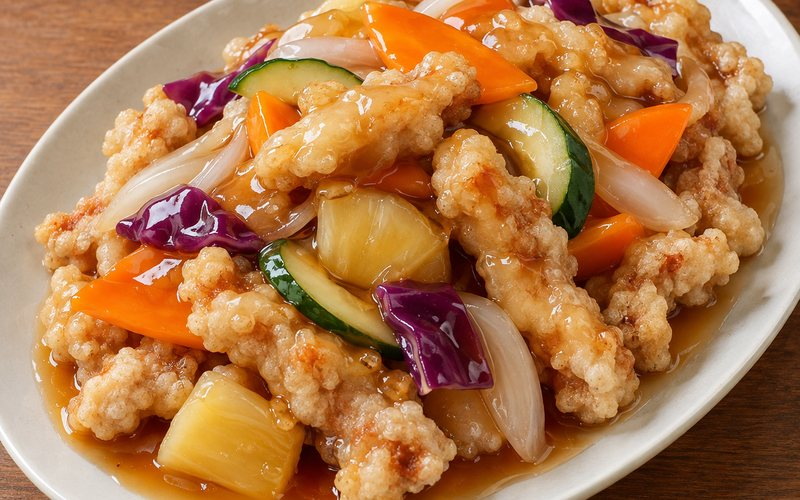
韓国式中華
カリッと揚げた豚肉に甘酸っぱいソースを添える料理です。
4人でのおすすめ 小または中サイズを一皿シェア。
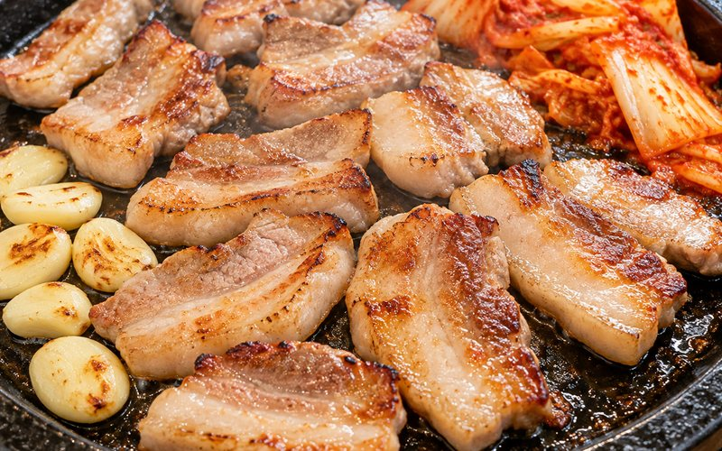
肉料理
豚バラ肉を自分たちで焼き、葉野菜、ねぎ和え、にんにく、焼きキムチと一緒に食べます。
4人でのおすすめ サムギョプサルと肩ロースを組み合わせ、冷麺か焼き飯で締める。
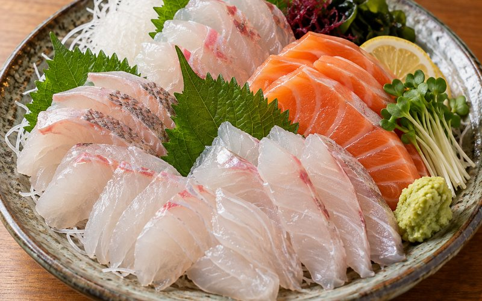
海鮮
刺身や魚介に加え、チヂミ、焼き物、揚げ物、メウンタンなど多彩な副菜を楽しむ食事です。
4人でのおすすめ 副菜が充実した店で刺身盛り合わせの中サイズを注文。
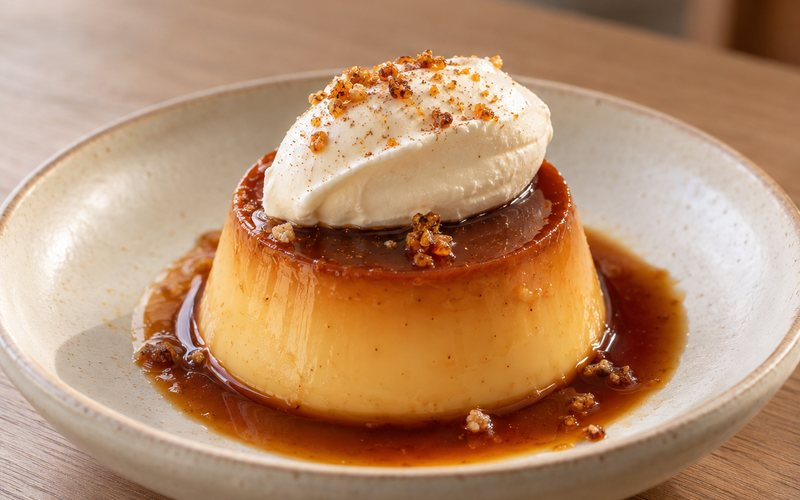
カフェ・スイーツ
ベーカリー、ケーキ、プリン、ポップアップストアを巡る昼のカフェ体験です。
4人でのおすすめ デザート2～3品と飲み物をシェア。
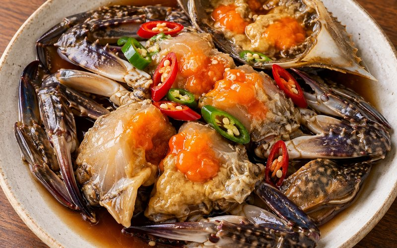
海鮮
生のワタリガニを醤油だれで熟成させ、身やカニみそをご飯と混ぜて食べます。
4人でのおすすめ 定食を2～3人前頼み、ほかのおかずとシェア。
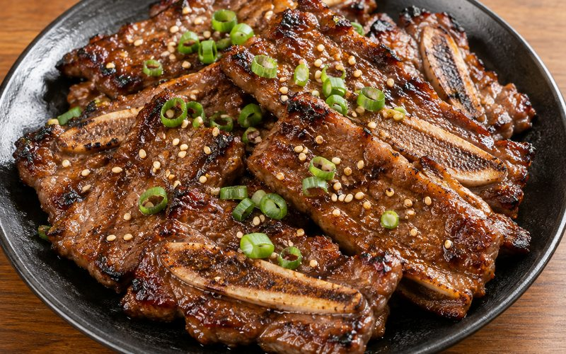
肉料理
甘辛い醤油だれに漬け込んだ豚肉を焼く料理です。
4人でのおすすめ まず4人前を頼み、冷麺か味噌チゲを追加。
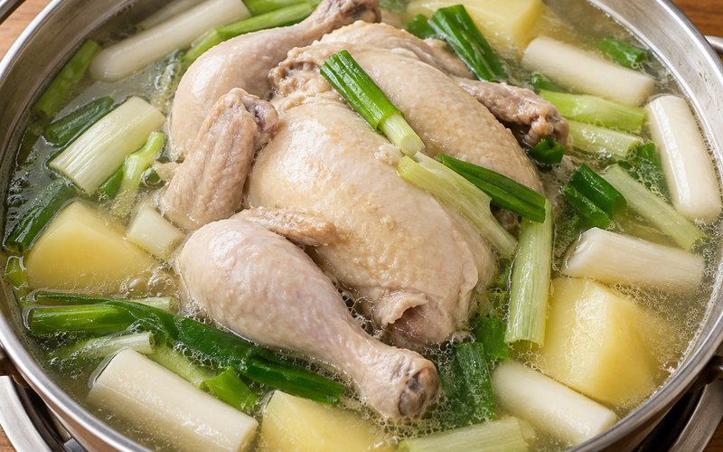
鶏料理
鶏一羽をじゃがいもや餅と煮込み、にら入りのたれにつけて食べるあっさりした鍋です。
4人でのおすすめ 大きめの鶏一羽に餅とじゃがいもを追加し、カルグクスかおかゆで締める。
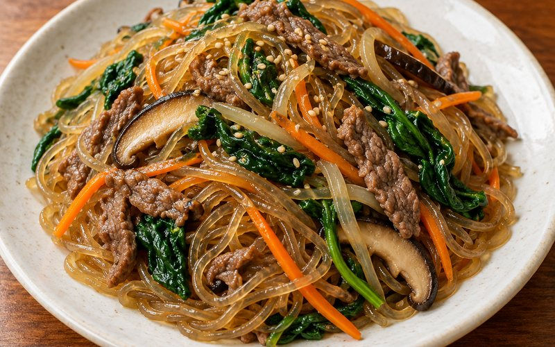
韓国料理
春雨、野菜、肉を甘辛い醤油味で炒めた料理です。
4人でのおすすめ 韓定食や盛り合わせのおかずとして味見。
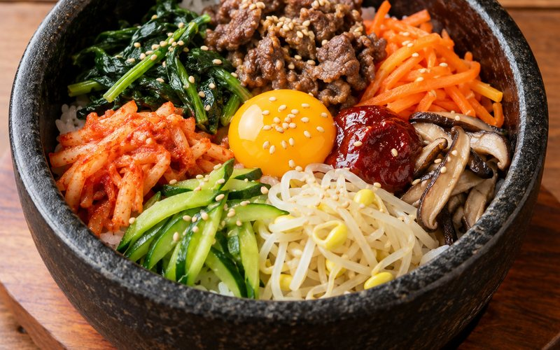
韓国料理
ご飯、ナムル、肉、卵をコチュジャンと混ぜて食べる代表的な韓国料理です。
4人でのおすすめ 石焼きと通常のビビンバを組み合わせて食べ比べ。
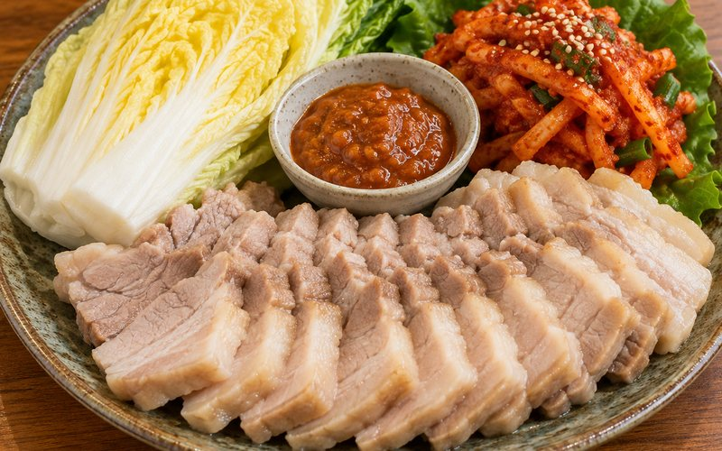
肉料理
ゆでた豚肉をポッサムキムチ、大根キムチ、アミの塩辛と一緒に食べます。
4人でのおすすめ 中サイズを一皿シェア。
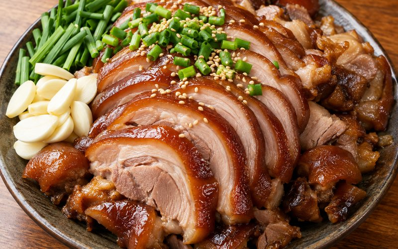
肉料理
豚足を醤油だれで煮込んだ料理で、肉は柔らかく皮はもちもちしています。
4人でのおすすめ 通常と辛口のハーフ＆ハーフ、または中サイズを注文。
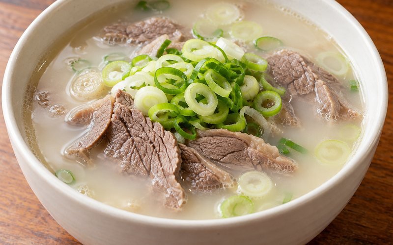
クッパ・朝食
牛骨と肉を長時間煮込んだ優しい味のスープ。ねぎ、塩、カクテキで味を整えます。
4人でのおすすめ 一人一杯ずつ。
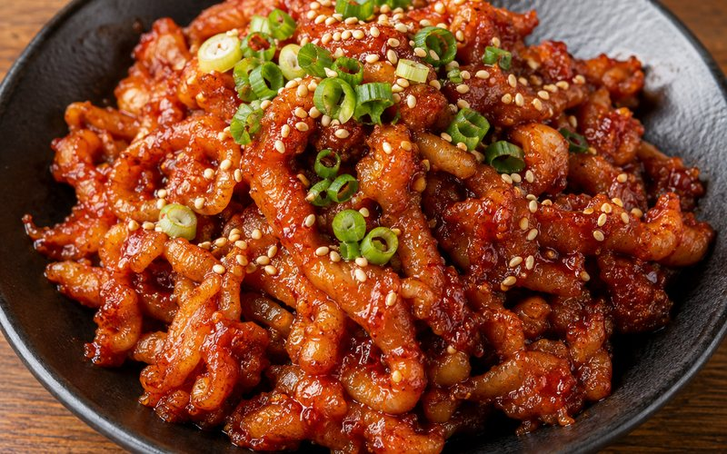
鶏料理
もちもちした鶏足をかなり辛く味付けした韓国式のおつまみです。
4人でのおすすめ 骨なしを1人前頼み、茶碗蒸しとチュモッパを追加。
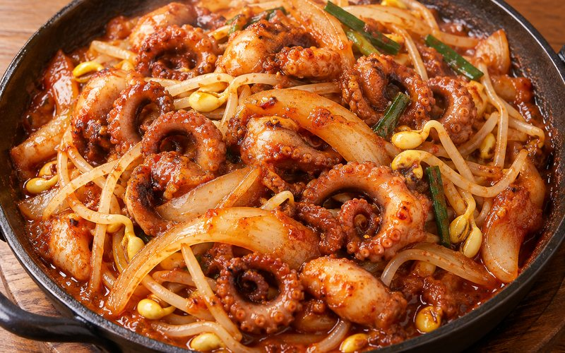
海鮮
イイダコを甘辛く炒め、もやしやえごまの葉と一緒に食べます。
4人でのおすすめ 3～4人前を頼み、焼き飯を追加。
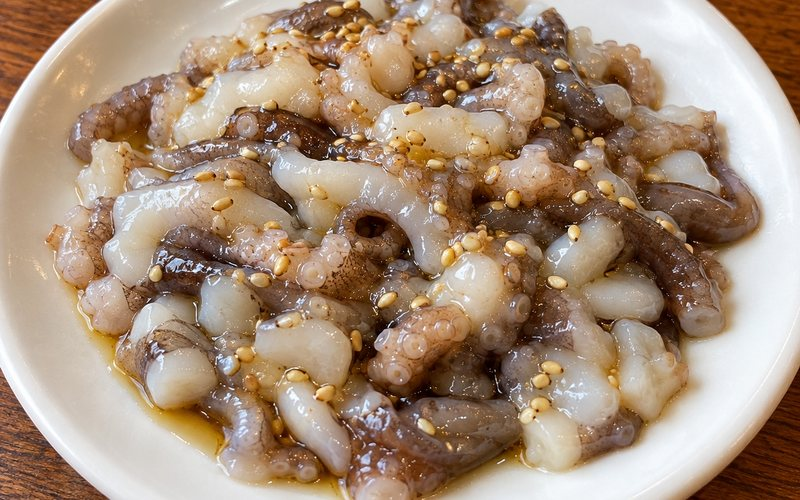
海鮮
動いているテナガダコを細かく切り、ごま油とごまで食べる体験型の料理です。
4人でのおすすめ ユズちゃんおすすめ。一皿だけ頼み、少量ずつ試す。
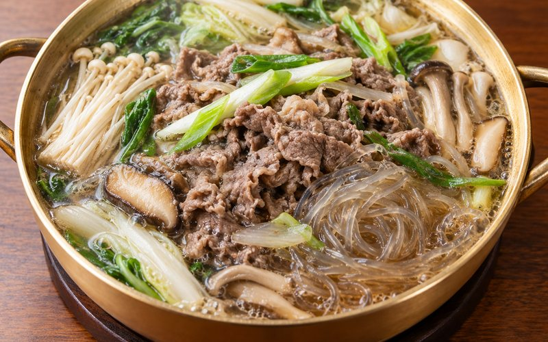
肉料理
プルコギ、きのこ、野菜、春雨を甘めのスープで煮る鍋料理です。
4人でのおすすめ 3～4人前の鍋を一つシェア。
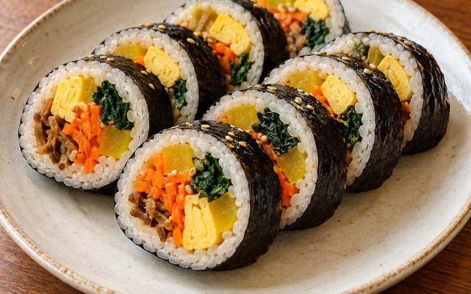
粉食・軽食
ご飯、卵、野菜、たくあんなどを海苔で巻いた軽食です。
4人でのおすすめ 基本、ツナ、プルコギなど2～3本をシェア。
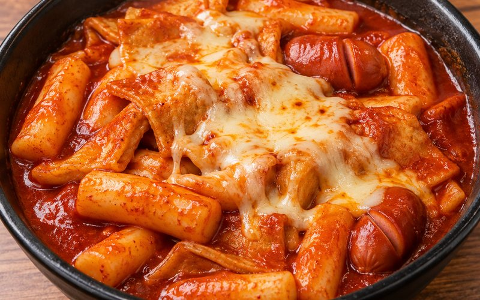
粉食・軽食
ソーセージと練り物が入った量の多い激辛スープトッポッキ。韓国の強い辛さを体験できます。
4人でのおすすめ 最も辛くない段階を一つ頼み、揚げ物やチュモッパと少しずつ。
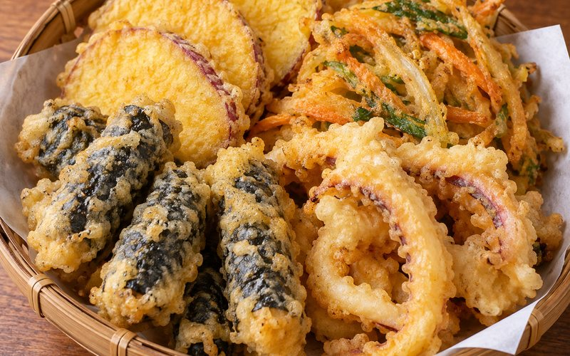
粉食・軽食
海苔巻き春雨、いか、野菜、さつまいもなどを揚げ、トッポッキの汁につけて食べます。
4人でのおすすめ 盛り合わせを一皿シェア。
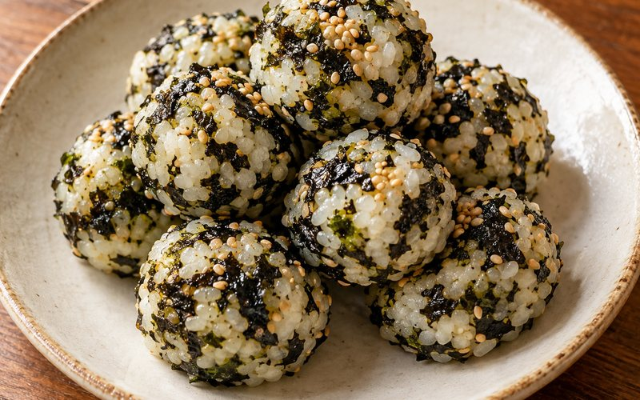
粉食・軽食
ご飯に韓国海苔とごま油を混ぜ、自分で丸めて食べるメニューです。
4人でのおすすめ ヨプトッポッキやタッパルの辛さを和らげるサイドに。
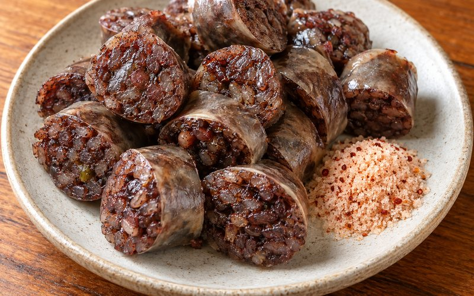
粉食・軽食
春雨と野菜を豚の腸に詰めた韓国式ソーセージです。
4人でのおすすめ 一皿だけ頼み、塩やトッポッキの汁で少しずつ。
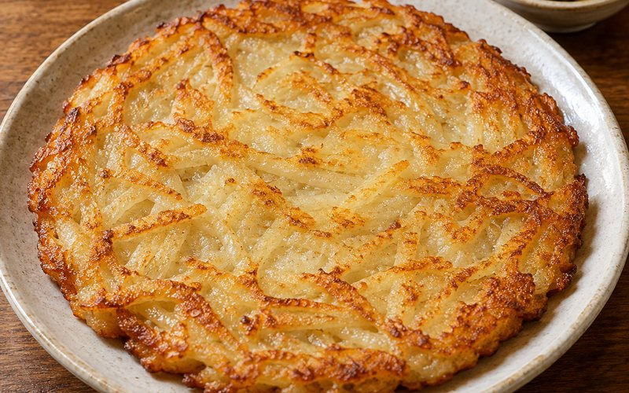
チヂミ・おつまみ
すりおろしたじゃがいもを焼き、外はカリッと中はもちもちに仕上げたチヂミです。
4人でのおすすめ 一枚をマッコリと一緒にシェア。
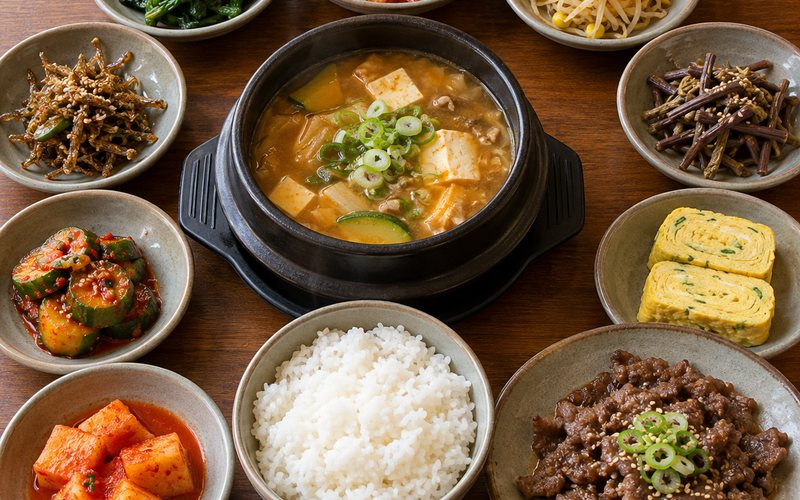
韓国料理
肉、魚、チヂミ、ナムル、汁物、多彩なおかずを一度に少しずつ味わう食事です。
4人でのおすすめ 4人用の膳で多彩な韓国料理を一度に体験。
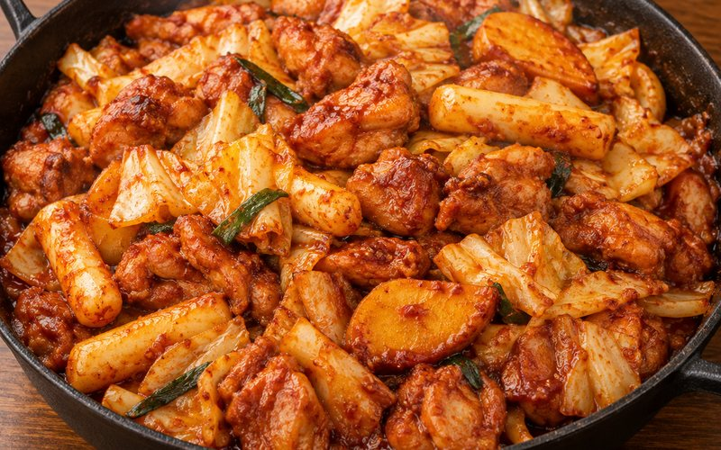
鶏料理
鶏肉、キャベツ、餅、さつまいもを辛い味付けで鉄板炒めにした料理です。
4人でのおすすめ 3～4人前にチーズを追加し、焼き飯で締める。
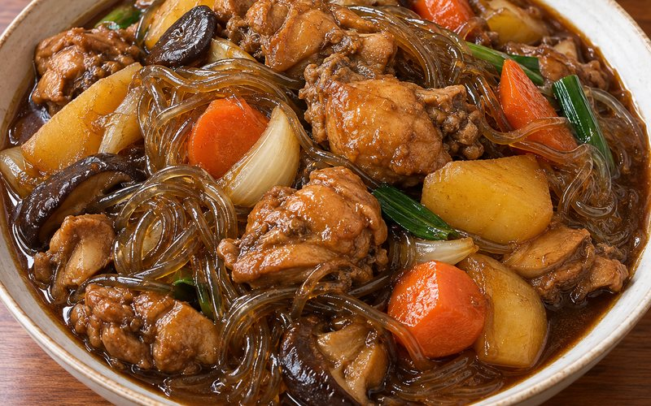
鶏料理
鶏肉、じゃがいも、野菜、春雨を甘辛い醤油だれで煮込んだ料理です。
4人でのおすすめ 中サイズを一皿シェアし、春雨を追加。
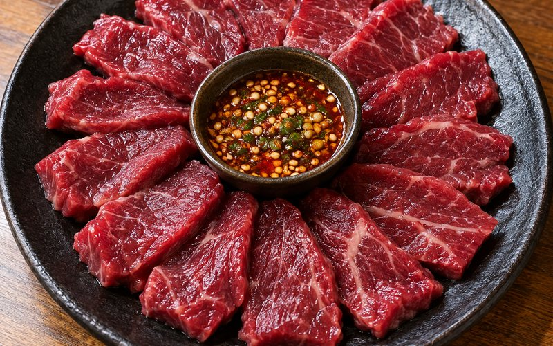
生肉・ホルモン
大邱式の厚切り生牛肉。ユッケより厚く、弾力のある食感が特徴です。
4人でのおすすめ 提供の有無を確認し、一皿を味見。
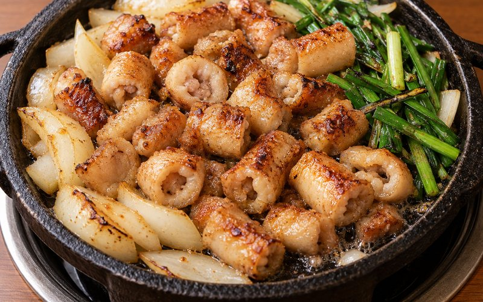
生肉・ホルモン
牛の小腸を焼いて食べる、香ばしく脂の多い韓国式ホルモン焼きです。
4人でのおすすめ コプチャン、大腸、ギアラの盛り合わせと焼き飯。
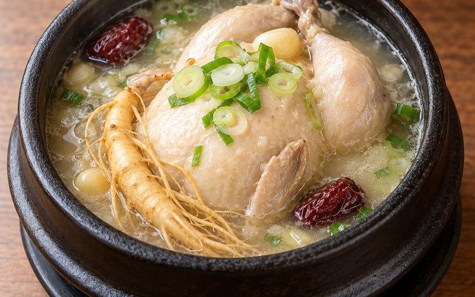
鶏料理
鶏一羽にもち米、高麗人参、なつめ、にんにくを詰めて煮込む滋養料理です。
4人でのおすすめ 一人一杯、または二羽をシェア。
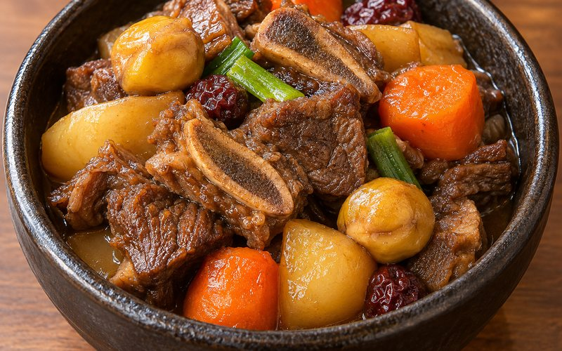
肉料理
牛カルビを醤油だれで柔らかく煮込んだ、特別な食事にも合う料理です。
4人でのおすすめ 中サイズ一皿とご飯または冷麺をシェア。
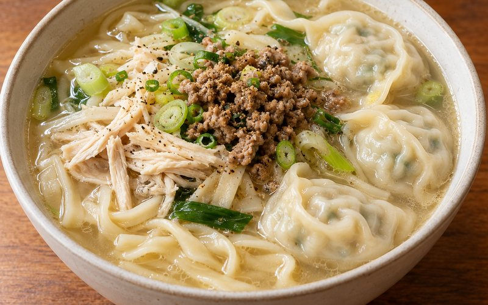
麺料理
濃厚な鶏だしのカルグクス、大きな餃子、にんにくの効いた辛いキムチで有名な明洞の食事です。
4人でのおすすめ カルグクス2～3杯と餃子一皿をシェア。
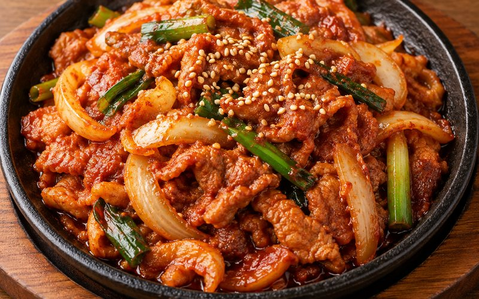
肉料理
豚肉をコチュジャンだれで辛く炒めた定番のおかずです。
4人でのおすすめ 2～3人前と葉野菜、チゲを一緒に注文。
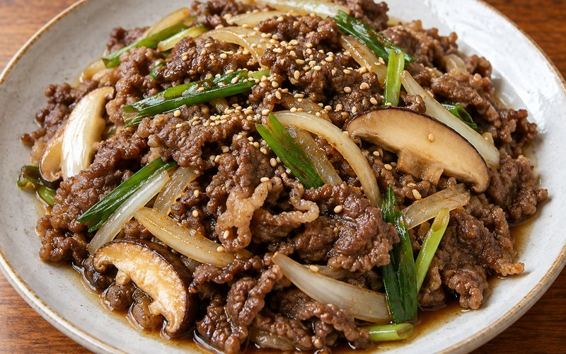
肉料理
薄切り牛肉を甘い醤油だれに漬けて炒めた料理です。
4人でのおすすめ 2～3人前をほかのおかずとシェア。
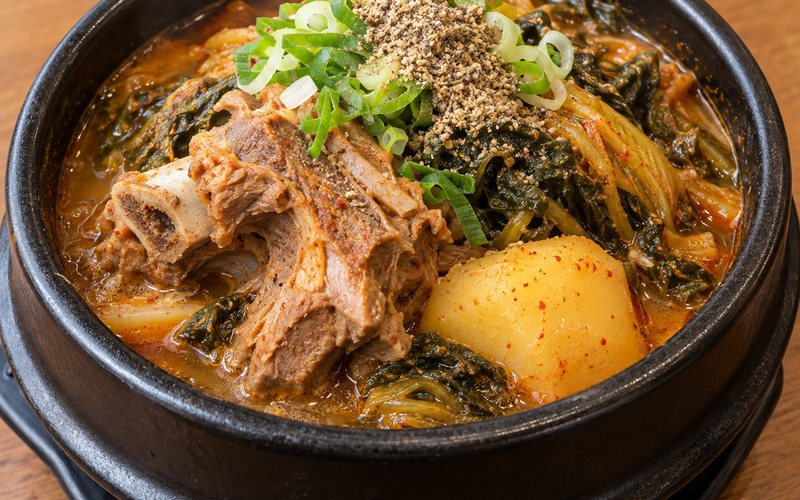
スープ・鍋
豚の背骨、じゃがいも、青菜を辛いスープで煮込んだ料理です。
4人でのおすすめ 中サイズにすいとんやラーメンを追加し、焼き飯で締める。
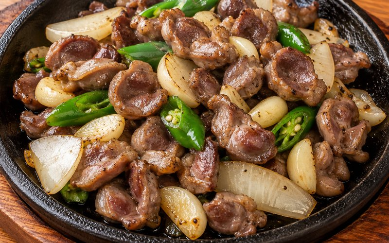
鶏料理
鶏の砂肝を塩味または辛いたれで炒めた、こりこり食感のおつまみです。
4人でのおすすめ 塩焼きを一皿シェア。
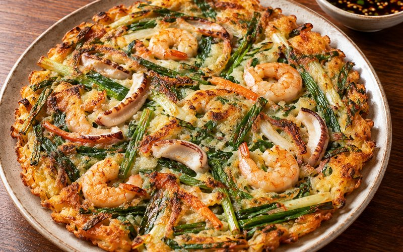
チヂミ・おつまみ
ねぎ、いか、えび、貝などを入れて香ばしく焼いたチヂミです。
4人でのおすすめ 一枚をマッコリと一緒にシェア。
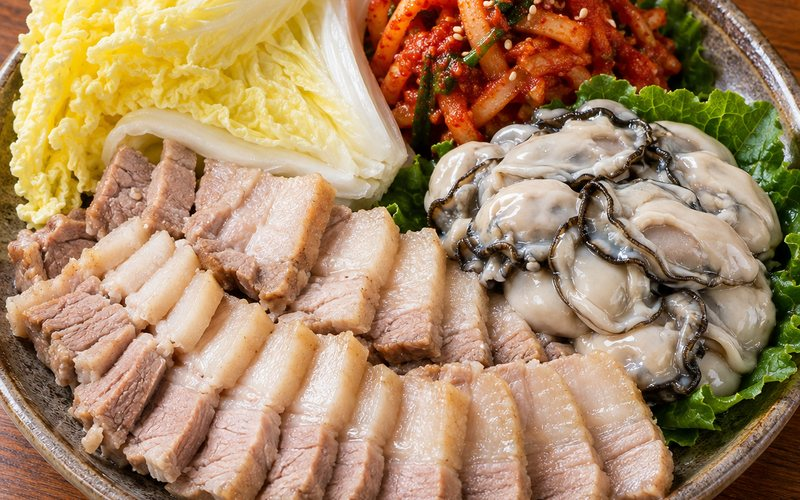
肉・海鮮
ゆで豚、生牡蠣、ポッサムキムチを一緒に食べる冬の季節料理です。
4人でのおすすめ 中サイズを一皿シェア。
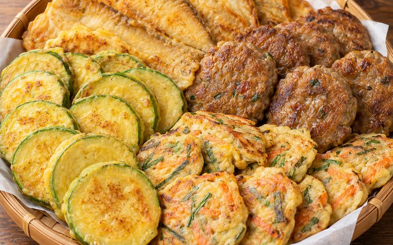
チヂミ・おつまみ
白身魚、牛肉、肉団子、ズッキーニなど、さまざまなジョンを一皿に盛った料理です。
4人でのおすすめ 盛り合わせ一皿とマッコリ。
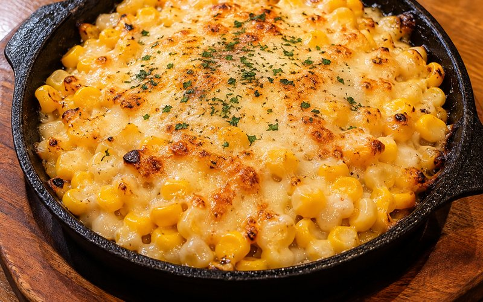
おつまみ
コーンにマヨネーズとチーズをのせて熱々に焼いた、甘く香ばしいサイドメニューです。
4人でのおすすめ 一皿をおつまみとしてシェア。
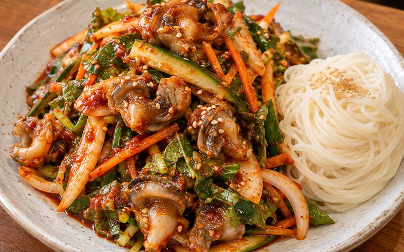
おつまみ
つぶ貝と野菜を甘酸っぱく辛く和え、そうめんと一緒に食べるおつまみです。
4人でのおすすめ 一皿とそうめんを4人でシェア。
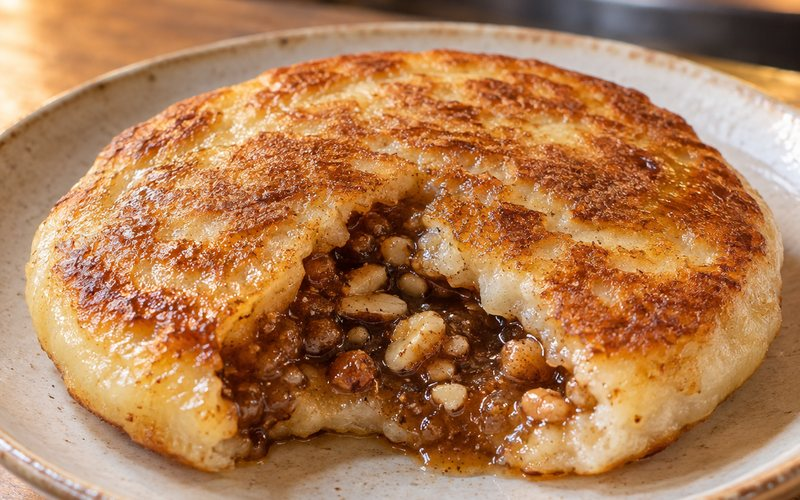
屋台スナック
砂糖、シナモン、ナッツのあんを入れて焼く温かいパンケーキ風のおやつです。
4人でのおすすめ 1～2個を分けて味見。
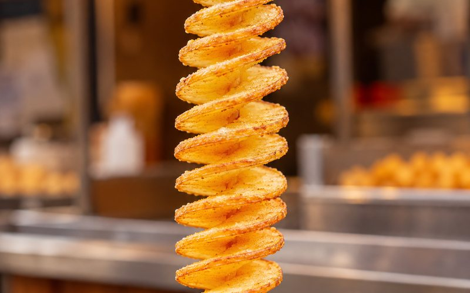
屋台スナック
じゃがいも一個をらせん状に長く切って揚げる屋台スナックです。
4人でのおすすめ 1～2本をシェア。
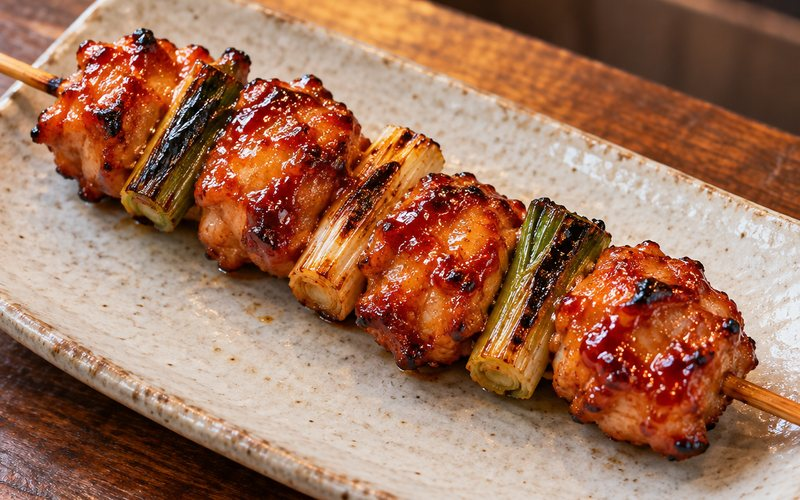
屋台スナック
鶏肉を串に刺し、甘口または辛口のたれを塗って焼きます。
4人でのおすすめ 味違いで2～3本を頼んでシェア。
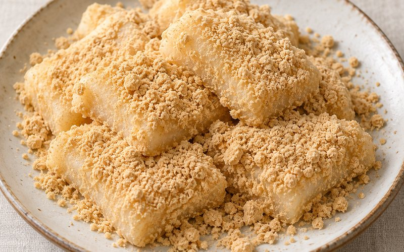
伝統菓子
もち米の餅に香ばしいきな粉をまぶした、柔らかくもちもちした伝統菓子です。
4人でのおすすめ 一パックまたは一皿をシェア。
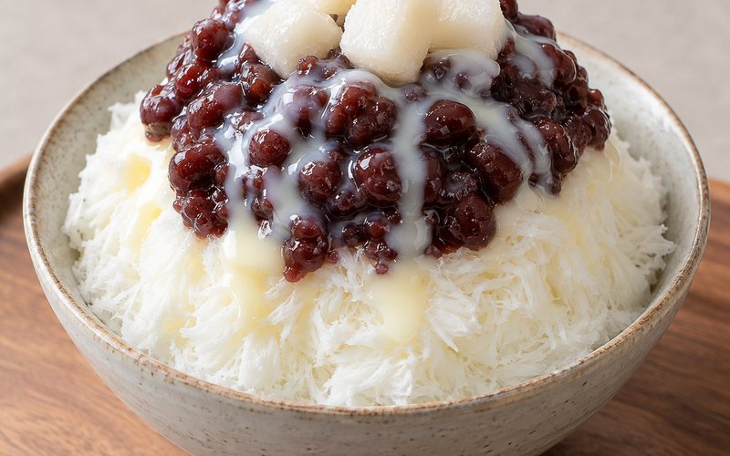
かき氷
細かく削った氷に小豆、餅、練乳などをのせる韓国式の夏デザートです。
4人でのおすすめ 大きな一杯を4人でシェア。
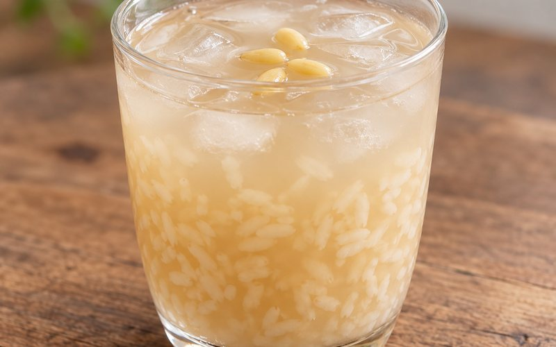
伝統ドリンク
麦芽と米粒で作る、冷たく甘い伝統飲料です。
4人でのおすすめ 缶またはグラスで一人ずつ味見。
コンビニ
小さな壺型ボトルで有名な甘いバナナ味の牛乳です。
4人でのおすすめ コンビニで一人一本。
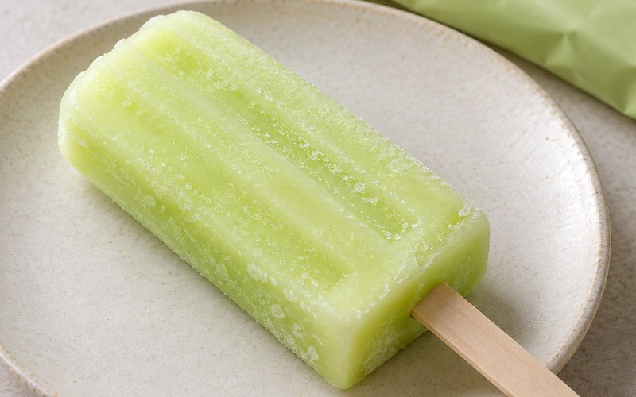
アイス
メロン味が特徴の韓国を代表する棒アイスです。
4人でのおすすめ コンビニで一人一本。
旅体験
漢江沿いのコンビニにある調理機で作り、屋外で食べるラーメン体験です。
4人でのおすすめ ラーメン2～3個とキンパやチキンを一緒にシェア。
かき氷ブランド
ミルク氷にインジョルミ、果物、チーズケーキなどをのせる韓国式かき氷チェーンです。
4人でのおすすめ インジョルミかき氷か季節のフルーツかき氷を一つシェア。
ベーカリー
もちっと重めのベーグルと多彩なクリームチーズで人気のベーカリーです。
4人でのおすすめ ベーグル3～4個を味違いでシェア。
チキンブランド
大きくカリッと揚げた『黄金オリーブチキン』が代表的な王道フライドタイプです。
4人でのおすすめ 黄金オリーブとヤンニョムを半々、または二つの味で比較。
チキンブランド
薄くカリッとした衣に醤油、ハニー、レッドソースをまとわせるスタイルです。
4人でのおすすめ ハニーコンボとレッドコンボを一緒に注文。
チキンブランド
プリンクルのようなシーズニングと、マッチョキングやゴールドキングなど濃いソースが特徴です。
4人でのおすすめ プリンクルと醤油系を一羽ずつ比較。
チキンブランド
油で揚げずオーブンで焼くスタイルで、コチュバササク系が代表的です。
4人でのおすすめ コチュバササクと基本のローストチキンを比較。
チキンブランド
オーブン調理とカリッとした食感を合わせた料理風チキン。ブラックアーリオとコチュマヨ系が人気です。
4人でのおすすめ ブラックアーリオとコチュマヨを半々、または二つの味で。
チキンブランド
甘辛いたれで焼いた鶏肉。残ったたれにご飯と海苔を混ぜて食べるスタイルです。
4人でのおすすめ 味付け焼き1～2羽とパックご飯を追加。
チキンブランド
濃い韓国式ヤンニョムチキンと甘いシュープリームソース系が特徴です。
4人でのおすすめ シュープリームヤンニョムとフライドを比較。
チキンブランド
薄くカリッとした衣と小さめのぶつ切りが特徴の昔ながらのチキンです。
4人でのおすすめ フライド、または3種セットをシェア。
チキンブランド
甘辛い昔ながらのヤンニョムチキンを代表する味です。
4人でのおすすめ フライドとヤンニョムのハーフ＆ハーフ。
チキンブランド
フライドとヤンニョムを中心にした伝統的な韓国フランチャイズチキンです。
4人でのおすすめ フライドとヤンニョムのハーフ＆ハーフ。
チキンブランド
スノーウィングのようなシーズニングチキンと多彩なソースをたっぷり楽しむスタイルです。
4人でのおすすめ スノーウィング系とヤンニョム系を比較。
チキンブランド
カリッとした揚げ物と、醤油、唐辛子、シーズニングなど多彩な味を選べるブランドです。
4人でのおすすめ 醤油系と辛口系の二つを比較。
チキンブランド
鶏一羽を丸ごとカリッと揚げ、塩につけて食べるレトロなチキンです。
4人でのおすすめ 1～2羽を手で分けてシェア。
該当する料理がありません。
KOREAN EXPERIENCE
韓服と宮殿観覧を中心に、北村韓屋、伝統工芸、博物館、伝統茶屋、寺院をつなぎました。
景福宮
景福宮周辺で韓服を借り、宮殿内を散策して写真を残す定番体験です。チョゴリとスカート、またはズボンを正しく着用すれば、国籍を問わず入場無料の対象になります。
景福宮
伝統衣装、旗、楽器が調和する儀式です。通常は午前10時と午後2時に行われますが、天候や行事によって変更される場合があります。
景福宮
勤政殿、慶会楼、交泰殿、峨嵋山などを歩く基本コースです。火曜日は休宮日で、季節により最終入場時刻が異なります。
景福宮
朝鮮王室の衣服、儀礼、科学技術、宮中生活を幅広く見られる博物館です。景福宮の前後に立ち寄りやすい場所です。
安国・昌徳宮
宮殿の殿閣と王室庭園を一緒に巡るコースです。後苑は解説付き観覧で、繁忙期は早く売り切れます。
安国・北村
住民が暮らす韓屋の路地を歩きます。レッドゾーンは午後5時から翌朝10時まで観光客の立ち入りが制限されます。
安国・北村
螺鈿漆器、ポジャギ、組み紐、韓紙、丹青、印鑑、号牌作りなどから一つを選び、自分の作品を作ります。
安国
陶磁器、金属、繊維、木工など韓国工芸を幅広く見られます。安国駅から近く、北村と仁寺洞の間に組み込みやすい場所です。
仁寺洞
韓紙、筆、陶磁器、螺鈿漆器、伝統小物、ギャラリーを巡り、お土産を選ぶのにぴったりのエリアです。
仁寺洞
なつめ茶、五味子茶、双和茶、シッケと薬菓、インジョルミ、開城ジュアクなどを韓屋の雰囲気で楽しむ休憩体験です。
仁寺洞
都心にある韓国仏教寺院です。大雄殿、丹青、季節ごとの提灯装飾を静かに見学できます。
鐘路
小さな韓屋を改装したカフェ、飲食店、ショップが集まり、伝統建築と現代のソウル文化を同時に楽しめます。
景福宮は火曜日が休宮日です。韓服の無料入場は、チョゴリとスカートまたはズボンを正しく着用した場合に適用されます。北村は住民の生活区域なので、レッドゾーンの訪問時間制限と静かに歩くルールを守りましょう。
NEIGHBORHOOD RESTAURANTS
明洞、光化門、景福宮・安国周辺のお店をまとめました。混雑度は一般的な食事時間帯の目安で、曜日や時間によって変わります。
派手な観光客向け食堂より、昔ながらのソウルの焼肉店らしい雰囲気を味わいたい時に向いています。
4人でのおすすめ カルビを主役にし、テンジャンチゲとご飯を一緒に注文。
Googleマップを開く複数の軽食を少しずつシェアしやすい、明洞の老舗粉食店です。
4人でのおすすめ キンパ2本、トッポッキ、チョルミョンまたはうどんを一品ずつシェア。
Googleマップを開く澄んでいながら深みのある牛スープのコムタン専門店で、朝食や二日酔いの食事にも向いています。
4人でのおすすめ コムタンは一人一杯。余裕があればゆで肉を追加。
Googleマップを開く牛血、内臓、青菜が入る老舗の酔い覚ましスープ店で、挑戦メニュー寄りです。
4人でのおすすめ 初めてならスープ1～2杯をシェアし、ゆで肉かジョンを追加。
Googleマップを開く4人で鍋のように分けるオボクチェンバンと平壌冷麺の組み合わせがおすすめです。
4人でのおすすめ オボクチェンバンを主役にし、平壌冷麺1～2杯をシェア。
Googleマップを開く麺、海苔、ねぎ、大根おろし、わさびをつゆに混ぜて食べる韓国式冷やしそばの専門店です。
4人でのおすすめ 冷やしそば2～3人前とポッサムまたはジョンビョンを注文。
Googleマップを開く安国駅と北村の間で食事とお酒を楽しめる韓国料理酒場。ポッサム、ズッキーニ料理、魚や塩辛類がそろいます。
4人でのおすすめ 4人なら五合ポッサム中または大、ズッキーニ豚鍋、海老ジョンかズッキーニ肉ジョンを一品。
Googleマップを開く麺やジョンを気軽に分け、マッコリを合わせるのに良い西村の食堂です。
4人でのおすすめ 麺またはすいとん2品、じゃがいもチヂミ、ジョン盛りをシェア。
Googleマップを開く韓屋で刺激の少ない開城式餃子と鍋を楽しめ、外国人グループにも食べやすい店です。
4人でのおすすめ 餃子鍋を主役にし、開城式餃子か小さな餅入りスープを追加。
Googleマップを開く景福宮から北村や三清洞へ移動する日の昼食に良い店ですが、週末は行列が多めです。
4人でのおすすめ すいとん2～3杯とじゃがいもチヂミ1枚をシェア。
Googleマップを開く北村で人気のカルグクスと餃子の専門店。食事時は列ができやすい店です。
4人でのおすすめ カルグクス2杯、餃子スープ1杯、王餃子1皿をシェア。
Googleマップを開く景福宮近くの韓屋の雰囲気で韓国の滋養料理を体験できる有名店です。
4人でのおすすめ 基本のサムゲタンは一人一杯。追加メニューは食事量を見て決める。
Googleマップを開く夜の2軒目に最適ですが、待ち時間の難度が最も高い部類に入る西村の韓国料理酒場です。
4人でのおすすめ 明太子豆腐鍋と旬の海鮮2～3品を焼酎や伝統酒と一緒に。
Googleマップを開くPERSONAL PICKS
安国駅から約300m、桂洞通りにある韓国料理酒場です。4人なら五合ポッサム、ズッキーニ入り豚鍋、ジョンを一品組み合わせるのがおすすめ。昼はポッサム、チェユク炒め、プルコギの定食も選べます。
マッチャンが実際に選んだおすすめを、ここへ順番に追加します。
CHECK BEFORE VISIT
訪問日が決まったら、休業日、営業時間、予約可否をもう一度確認してください。